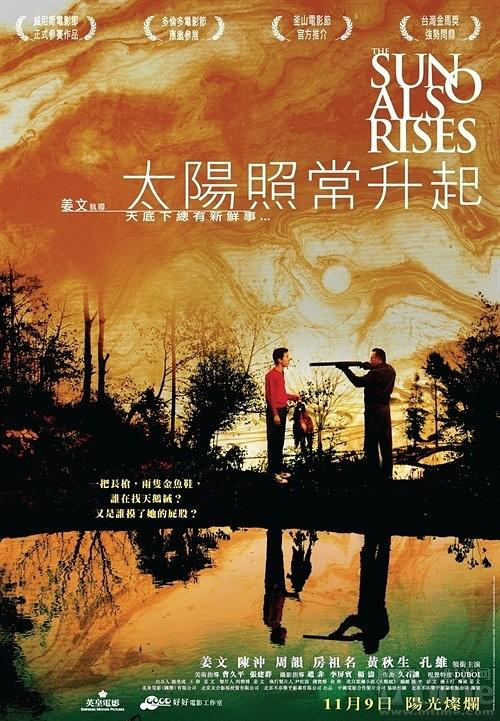
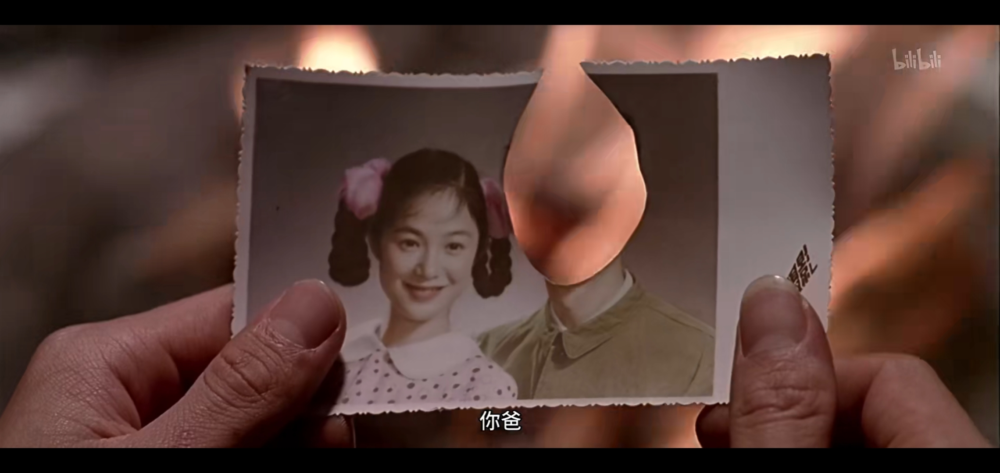
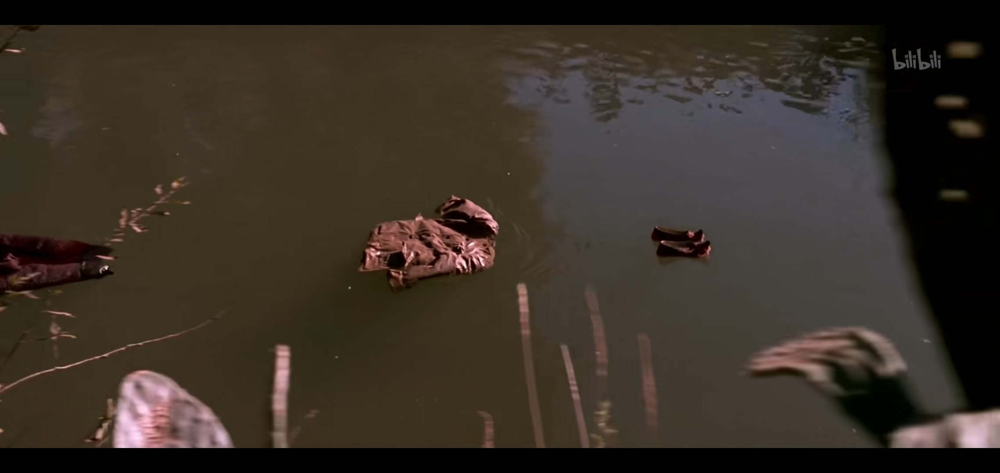
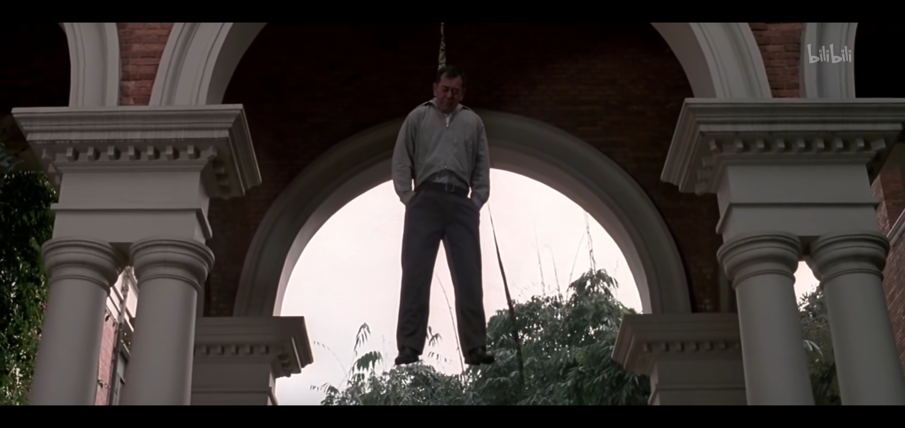
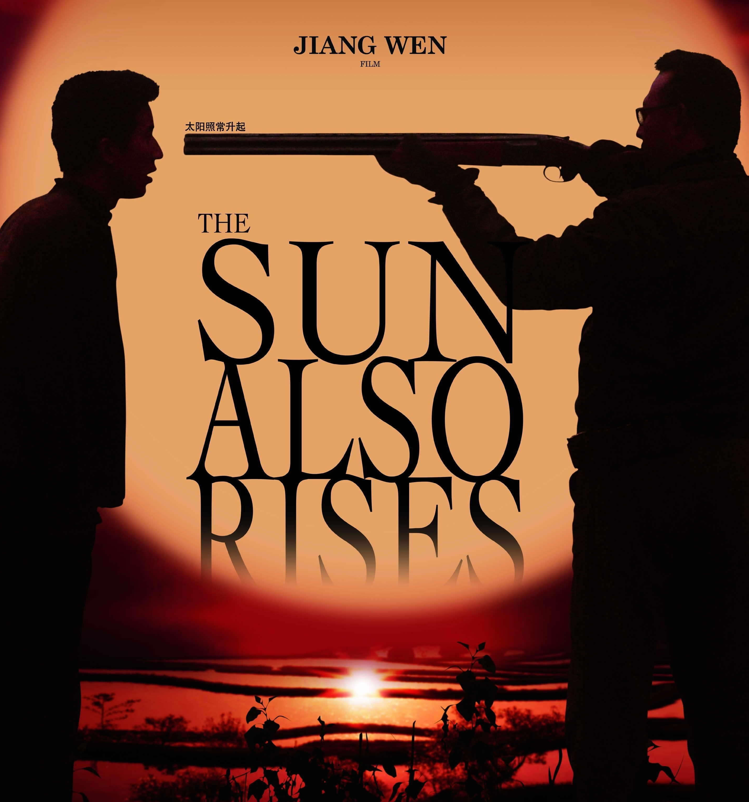
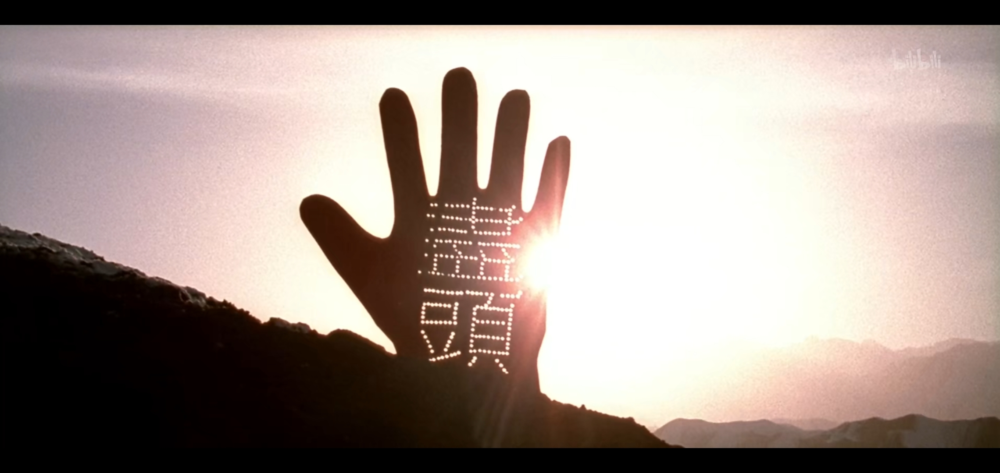

基本信息《太阳照常升起》是一部中国大陆电影，于2007年9月14日开始在中国大陆上映。该部电影是继《阳光灿烂的日子》和《鬼子来了》之后，姜文导演的第三部电影作品，主要演员有周韵、房祖名、姜文等。 电影改编自作家叶弥的短篇小说《天鹅绒》。电影讲述了四段分别发生于1958年至1976年期间，地点在中国南部、东部、西部，看似分散实又相连的人物故事。其表达的电影主题是，在“那个极度压抑个人性欲的时代”，每个人所反映出的“人性欲望之中各种极致境界”。该电影亦被认为是一部艺术电影，其剧情有留白，保留有想像空间，风格类似《阳光灿烂的日子》。 |
 |
剧情简介该部电影的剧情是由“疯”、“恋”、“枪”以及“梦”四部分串联起来，地点分别是在云南无名村落、东部某大学、西部新疆戈壁。
疯时间为1976年春天，地点为中国南部某村落。妈（周韵 饰演）做梦后去街上买鞋，回家路上遇见逃学的儿子（房祖名 饰演），而后便冲到学校强迫儿子退学。在两人的回家路上，儿子先搭车回家，而妈把新鞋挂在路边的大树上后去方便。在方便完毕后，却发现鞋子不见，进而开始发疯。之后妈开始有爬树、刨坑、挖石头、念诗等行为，同时，儿子发现家里的东西经常消失不见。 一天，两人赌气地相互砸掉家里碗、盘、罐等。在冷静后，妈向儿子透露自己与儿子的父亲的相识过程。妈说，丈夫是一名军人，名字叫“阿辽沙”，并拿出了一张他们两人的合照，不过照片中父亲的脸部已经被挖掉。妈说，“你的样子再减去我的样子，就是他的样子”。  随后，在一次外出中，儿子无意发现了妈在树林里用石头所盖的一所“白宫”，并看到家里丢失的东西全部汇集于此。儿子狂跑回家，看到妈穿着那双绣着鱼的鞋站在门口。妈对儿子说自己已经“好了”，恢复常态，并坦诚以后会好好对待儿子，不再打骂。之后劝儿子赶紧去接刚刚下放到村里的外来人，说“走错了地方那就坏了”，她会在家里等儿子回来接着聊天。就在儿子接人到村落河边时，村落的同龄伙伴告诉儿子，妈已经消失，而河流上正漂着妈的绣花鞋和一套军衣。 
恋1976年夏天，在中国东部的一所学校，林大夫暗恋着梁老师，却暗地里与老唐（姜文 饰演）有染，而梁老师与老唐是好朋友。 在一次露天电影中，梁老师偷偷摸了一个女人的屁股，而其他地方同时忽然传来“抓流氓”的喊声。梁老师由于做贼心虚而逃跑，众人认定其为嫌疑对象而追赶他，继而殴打。在逃跑过程中，梁老师无意发现了林大夫和老唐的奸情。 随后，林大夫自愿加入到了指认流氓的队伍，其目的想利用这次机会在众人面前向梁老师表达爱恋，因为自己是对梁老师是“有感情的”，“就是要让你（梁老师）摸我（屁股）”。尽管指认成功，但由于林大夫当晚是与老唐在一起，提供的自己所在观影位置与“流氓”位置不符，继而该计划没有实施成功。在医院，林大夫向梁老师道出了该“引火烧身再道出事出有因”计划，继而正式向梁老师表达爱恋，但遭到梁的拒绝。 而老唐也极力想办法帮梁老师摆脱嫌疑，后者只是表示了极大的后悔。后经过调查，那几个真正的流氓已被公安局带走，从而证明了梁老师是“清白”的。最后的镜头中，梁的尸体挂在了枪带上。 
枪1976年秋天，在中国南部某村落发生的故事。生产队小队长（房祖名 饰演）开着拖拉机，载着下放到村落劳动改造的老唐（姜文 饰演）和唐妻。在路途上，老唐用梁老师留下的枪打了一只野鸡送给小队长，作为初次见面礼物。车开到村落河边时，村落的同龄伙伴告诉小队长，妈已消失，众人一起围观河中漂流着的绣花鞋和军衣。 老唐在下放的日子，其分配到的工作就是给生产大队打猎。某天，老唐在石头白宫发现了自己妻子成为了小队长的猎物――两者有了奸情。后来老唐在水塘边愤怒地用枪指着小队长，说小队长“你该死”。小队长坦言并自己是该死，但不明白唐妻所说的“我老公说我的肚子像天鹅绒”中的天鹅绒是何物。老唐告诉小队长，自己会找天鹅绒给他看，不过“看到天鹅绒的那天，就是你死的那天”。 之后老唐去了北京，寻求朋友帮忙找天鹅绒，在这个过程中，朋友分析了是由于老唐自己先冷落了妻子而导致出现奸情。之后老唐离开北京回到村落，并打算原谅小队长。两者再次在水塘旁边相遇，老唐在向小队长上缴完猎物之后，转身离开，这时小队长说自己也出外地，已经知道什么天鹅绒，随即向老唐展示天鹅绒，并对老唐说了一句“可是你老婆的肚子根本不像天鹅绒”。这句话再次触怒了老唐，老唐随即开了枪。 
梦1958年的冬天，中国西部新疆的戈壁滩，老唐和妈的陈年往事。在一望无际的戈壁滩上，两个骑着骆驼的女人不期而遇，二人分别是怀着身孕的妈和唐妻，路上唐妻讲述自己与老唐的甜蜜爱情，而妈一直沉默不语。两人之后在一个写着“尽头”和“非尽头”的分叉口分开。  妈去的方向是苏联，在那里，一个苏联女人告诉妈，阿辽沙已死。随后，在一个只有旧军衣等军用品但没有尸体的停尸房，妈哭诉了自己被骗和被抛弃的遭遇，坚持不相信阿辽沙已经去世。而唐妻去的方向则是一个山顶，老唐在那里等着她，之后老唐把唐妻拥在怀里，并说了一句“你的肚子像天鹅绒”，完后向天开了两枪。 当晚，老唐在一个戈壁上举行隆重的婚礼，人群狂欢，而梁老师也在混乱的人群摸了多个女人的屁股。就在这时，一辆载着妈的火车经过，一个被火点燃的帐篷升空并追随着火车。
|